Resources and engine
Kyr refers here to the engine of the first Kyrandia. ScummVM calls the game LoK and shortens Hand of Fate to HoF. WebKyr runs the game with its own code. We use the DOS version and ScummVM source to check room behavior and file formats.
Original DOS CD edition
Archives store backgrounds, masks, shapes, animations, scripts, and audio as separate resources. When you enter a room, the engine assembles the scene and applies the script’s commands. Video memory holds color indices. The palette gives those indices their colors.
WebKyr in the browser
The importer reads a local CD installation and produces KYR1 packs, room tables, and scripts. The game runs in TypeScript. Canvas 2D composes the frame, WebGL2 processes some layers, and Web Audio handles sound.
| Resource | Role in the original | In WebKyr |
|---|---|---|
PAK / APK | Directory of names and offsets inside a container. | The importer selects the resources it needs. |
CPS / COL | Indexed bitmap and palette. Some CPS files contain their own palette. | The bitmap and resulting RGB palette go in the pack. |
MSC / DAT | Walkability and depth masks, coordinates, room palette, shapes, and local animations. | Masks and room data. The engine reads DAT commands. |
SHP / WSA | Character shapes and a series of frames or changes within a rectangle. | Shape atlases, keyframes, and differences between frames. |
EMC | Bytecode for scenes, interactions, and quests. | Stack interpreter and LoK command handlers. |
ADL / XMI / VOC | AdLib and Roland scores, plus recorded dialogue in the CD edition. | Original banks for synthesis and MP3 dialogue banks. |
Color indices and palettes
Each pixel in a 320×200 VGA bitmap takes one byte. A value of 42 means “use entry 42 in the current palette.” A palette holds up to 256 entries, each with red, green, and blue components. The DOS files store component values from 0 to 63. WebKyr multiplies each value by four on import and keeps the indices as they are.
x=207, y=45.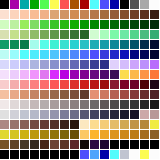
Changing colors in DOS
The engine can swap colors while leaving every pixel index in place. That’s how it dims rooms and handles some lighting and magic effects. In GEMCUT, the DAT file sets colors 228 through 247. In caves, the script picks a palette according to the brightest fireberry the player carries or has left on the ground.
Palettes in the browser
The GPU reads a byte from an R8UI texture and looks up its color in a 256×1 palette. When WebGL2 is unavailable, the CPU does the lookup and writes the result to ImageData. The room background and the pixels that cover the character use the same updated colors. Scaling uses nearest-neighbor sampling.
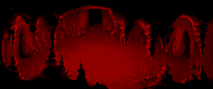
Indexed renderer Palette selection in EMC Palettes and drawing in ScummVM
Sizes and compression
A 320×200 indexed bitmap takes 64,000 bytes, plus 768 bytes if it has its own palette. The same bitmap needs 256,000 bytes in uncompressed RGBA. Westwood saved more space by limiting updates to the rectangles that change. The engine draws the background once. A flame, an arm, or a lift updates only its part of the screen.
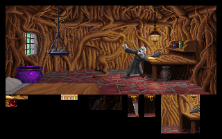
- RLE encodes a run of identical values in one command.
- LCW, also called Frame4, can refer back to data it has already decoded.
- WSA stores changes from the preceding frame. A skip command leaves part of the buffer alone.
GEMCUT.CPS is 20,746 bytes in the installed CD edition. Its DAT file is 329 bytes.
| LIFTUP · 30 frames at 80×80 | Bytes | Measurement |
|---|---|---|
| Uncompressed RGBA frames | 768,000 | 30 × 80 × 80 × 4. |
| Uncompressed indices and one palette | 192,768 | 30 × 80 × 80 + 768. |
| 30 separate PNGs | 169,120 | One PNG per decoded frame, encoded in Chromium. The size depends on the encoder. |
| Original LIFTUP.WSA | 30,225 | File from the installed DOS CD edition. |
| Standalone WebKyr KYR1 clip, gzipped | 21,502 | The same frames, including the palette, header, and frame table. |
A WebKyr keyframe stores every index. Frames between keyframes store runs of changes with an offset + length + XOR bytes. The importer writes a full frame when it takes less space than the delta. Seeking starts at the previous keyframe, at most 63 frames back. Gzip compresses the whole pack. The savings in the table are for this clip and depend on how much of the frame changes.
Web build sizes at the time of measurement
| Part of the build | Size |
|---|---|
| Game code, rooms, and in-game interface | 6.86 MB |
| 2D book menu | 0.72 MB |
| Optional 3D book | 2.76 MB |
| CD dialogue banks | 7.73 MB |
| GeneralUser GS SoundFont | 32.32 MB |
| Whole build excluding this guide | 52.00 MB |
These are sizes on disk. The game loads room packs and dialogue as you play. GeneralUser GS downloads when you select it. In the installed DOS CD edition, the .VRM files directly under DAT take 75.77 MB out of 82.71 MB. A comparison with the floppy release needs the total size of the disks in a specific edition. A single floppy holds 1.44 MB.
Transparency and depth
An ordinary character shape encodes skips in its data. A nonzero index draws a pixel. The pair 00 N leaves the next N destination pixels alone, so you can see the background between the character’s legs and in the corners. In the browser, a keyed shape can decode to alpha=0 or alpha=255.
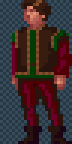
When zero means transparent
The same index can be a color in an opaque background. Some WSA clips are transparent overlays. Others contain opaque rectangles with part of the background already drawn. KYR1 specifies a transparency key for each clip. A value of −1 marks an opaque image. The original engine also combines indices through lookup tables for some effects.
If the engine always drew Brandon last, he would cover the tree completely. Kyr stores an MSC mask with one byte per point. The high bit 0x80 marks an obstacle. The lowest three bits 0x07 encode depth priority. The position of Brandon’s feet and a table of Y thresholds determine his layer. Each foreground pixel can then cover the part of the sprite that falls behind it.
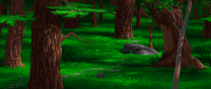
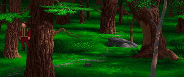
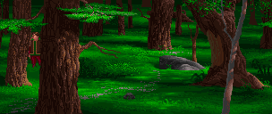
This example uses the original bitmap, mask, and character shape. Brandon’s feet are at (48, 92), on layer 2, in both images. The mask covers 259 of the shape’s 648 opaque pixels.
Drawing order in Kyr
The engine draws characters, items, and animations over the prepared background. Before redrawing, it can restore rectangles of the background. The height of the character’s feet and the terrain priority determine what appears in front.
Foreground in WebKyr
After drawing a character, Canvas restores the part of the character’s rectangle where priority > actorLayer. The appropriate decorations join that layer. NPCs and items also sort by Y. Dropped items have an extra visibility check at the foreground edge.
Animation
- Character shapesThe engine chooses walking frames by direction and can mirror the same shapes. Each frame has offsets that keep the feet anchored. Scaling by Y gives the scene perspective.
- Room loopsDAT specifies the shape rectangles, where to draw them, how long to wait, and when to loop. The fire in Brandon’s home can cycle through three small frames while he walks.
- Scripted animationWSA holds frames and deltas. The calling script decides their order and timing. The lift, the talking tree, and scenes with Malcolm use this format.
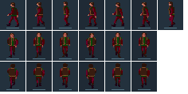
DAT commands
The GEMCUT fire uses three 8×8 shapes from the strip in the CPS. FF88 selects the shape and position, FF8A sets the delay in ticks, and FF8B loops the sequence. When Brandon speaks, the engine combines body shape 16 with separate head shapes.
Timing in WebKyr
sceneAnims.ts runs DAT commands. RoomScript waits for walking, frames, and dialogue. The opening uses a timeline extracted from DOS with positions and color indices. Skipping a line ends the wait while the script still applies the intended poses and actions.
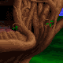
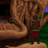
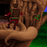
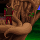
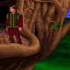
Five of the 30 frames in LIFTUP.WSA. The rectangle sits at (192, 56) in the scene. These frames are shown without interpolation.
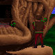
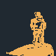
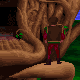
1,467 of 6,400 indices change between these frames. The middle image uses a highlight color to show them. After LCW decompression, the WSA decoder applies XOR to the previous frame. Skip commands leave unchanged areas alone.
DAT in WebKyr Brandon’s frames and head shapes Extracting the opening timeline
Scripts and game state
EMC stores script commands. A virtual machine with a stack and registers reads them. A command can ask the engine to check a flag, move Brandon, play a WSA clip, or change the music. The same commands take different arguments in different rooms.
- InputClick, held item, position, room, and current flags.
- EMCThe stack VM follows a branch and calls game commands.
- RoomScriptThe queue coordinates walking, animation, confirmations, and waits.
- StateThe flag, item, or room transition takes effect at the scripted moment.
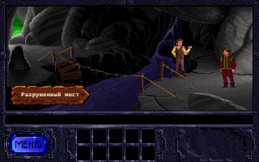
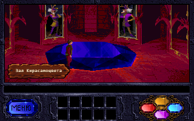
At import time, WebKyr extracts some opening commands from the CD edition’s EMC scripts. During play, scripts check items and flags to decide what happens next. The engine finds paths to exits using the walkability mask. Walking uses a grid with steps of 4 pixels on X and 2 on Y and checks a strip at the character’s feet. Walk speed changes that pace. Dialogue and scripted frames have their own timing.
Classic mode shows a logical 320×200 frame with the interface. Modern mode uses the 304×128 play area. Both axes scale equally, scene colors fill the remaining space, and pointer coordinates map back to the game.
A transition holds the current frame until the next room is ready. A save stores the current room, inventory, flags, items, visited room state, and format version. The browser edition adds the book, radial inventory, and control modes. They share the same game state.
Music and sound
A DOS script issues a music command. A game table maps it to a bank and track. Command 7 selects track 4 in KYRA1B for the Lake of Sorrow. The score describes notes, durations, instruments, and control events. The device synthesizes the audio as the game runs, which takes far less storage than recordings of the same length.
- Game eventEntering a room, speaking a line, or running a DAT or EMC action.
- SourceAn ADL or XMI track, a sound effect by number, or a voice clip by bank and number.
- Audio samplesThe synth generates PCM. Recorded dialogue decodes to PCM.
- MixMusic, effects, and voices each have their own volume.
| Mode | How it works | In WebKyr |
|---|---|---|
| AdLib (OPL2) | The driver reads ADL commands and sets the Yamaha operators. One operator modulates another, and envelopes shape the sound. There is no instrument ROM to supply. | The WASM build combines an adapted Westwood driver from AdPlug with Nuked OPL3 in compatibility mode. WebKyr ticks the driver at 72 Hz and reads PCM in blocks. This is the default mode. |
| Roland MT-32 / CM-32L | XMIDI contains MIDI events with durations and loops. Miles commands, including SysEx, load instruments. Roland’s LA synthesis combines synthesized partials with PCM waveforms. | The Munt/libmt32emu WASM build reads a compatible Control ROM and PCM ROM pair. The Control ROM holds data and tables. The PCM ROM holds recorded waveforms. The player supplies the ROMs, and the browser stores them locally. |
| SoundFont SF2 | A bank contains samples, note ranges, and instrument settings. | TinySoundFont in WASM plays XMI by mapping MT-32 programs to General MIDI. The mapping is approximate because Roland patches and GM instruments differ. |
How WebKyr connects sound to the game
WebKyr chooses the original banks and tracks, reads XMIDI, converts timing to sample positions, applies control commands, and sends buffers to an AudioWorklet. It also manages room cues, ROM and SoundFont loading, device changes, and mixing.
Synthesis engines
Nuked OPL3 handles OPL, Munt emulates Roland, and TinySoundFont plays SF2. WebKyr builds and runs those components in the browser. ScummVM serves as a reference for Kyr’s behavior.
KYRA1B / 4, recorded from AdLib in WebKyr. The upper plot shows the left channel’s minimum and maximum every 12.5 ms. The lower plot shows notes from the XMI version of the same theme. Bar length represents duration and height represents MIDI note number. The sample is 24 kHz mono. The whole KYRA1B bank takes 8,910 bytes in gzipped ADL and 9,406 bytes in gzipped XMI.The Yamaha MU50 emulator is in development separately. It is not selectable in the game yet.
Effects, speech, and volume
- Effects. In Roland mode, one music sequence and up to three effects share the synth. The Miles layer assigns and frees MIDI parts so an effect cannot change the instruments used by the music. AdLib and SF2 modes use a small bank of effects recorded from CM-32L synthesis. Book sounds are stored separately.
- Speech. The CD stores VOC clips in VRM archives. WebKyr converts the selected clips to MP3. The line number gives the engine the clip’s offset and length in the bank. The script determines the voice clip and its timing independently of the translated text.
- Transitions. The scene issues its own music commands first. When a route has none, the room supplies a fallback theme. Changing banks clears the previous scene’s audio queue.
- Default levels. WebKyr starts with music at 50%, effects at 25%, and speech at 60%. The browser allows audio after the player interacts. Opening the pause book or hiding the tab affects playback.
Music cue table Music and effects on one clock AdLib build Nuked OPL3 Munt TinySoundFont
Localization
WebKyr currently translates dialogue through ru-game.json and adds strings from i18n.ts and the item list. Some book components choose their strings directly, and the prologue lives separately. Dialogue keys often match the normalized English text. The same English line can need different keys when it appears in different situations.
One catalog for translators
The proposed lang/ru.json would group interface strings, dialogue, items, locations, and the prologue. The game could read it when the player selects a language. Editing the text would leave the keys intact. Dialogue keys could identify a scene and script line, with voice clips stored separately. A missing key would fall back to the original text.
Text in images
The Options button and Malcolm’s title card currently use localized images. To make them translatable through JSON, we would separate the background from the text and have the engine draw letters inside a defined rectangle. The font needs the language’s glyphs, and each string needs checks for wrapping and width.
{
"schema": 1,
"locale": "ru",
"ui": { "book.menu": "Меню", "game.options": "Настройки" },
"items": { "item.saw": "Пила" },
"locations": { "room.gemcut": "Дом Брендона" },
"dialogue": { "wise.cough.first": "Кхе-кхе…" },
"cards": { "intro.malcolm.title": "Малколм на свободе" }
}
This is a proposed format. A separate catalog could be replaced on the server and read the next time the game loads. A translation needs checks for substitutions, long lines, narrow screens, and new alphabets. The script still supplies speaker color, position, timing, voice clips, and animation. Voice acting in another language needs recordings in that language.
Current dictionary Russian dialogue Prologue Subtitle placement
Preparing artwork
Use transparent PNGs or an Aseprite source file with an export. Before animating, record the frame size, room palette, foot or attachment anchor, direction, and the shapes the clip replaces. For a room effect, also record its position, depth priority, and how long each frame lasts.
Artists can work on a new sprite in RGBA. When importing to an indexed layer, map each visible pixel to the room palette and assign transparent pixels the key reserved for that clip. Check the sprite against the background before and after palette changes. An existing RGBA character atlas can keep its alpha channel and use updated frame coordinates.
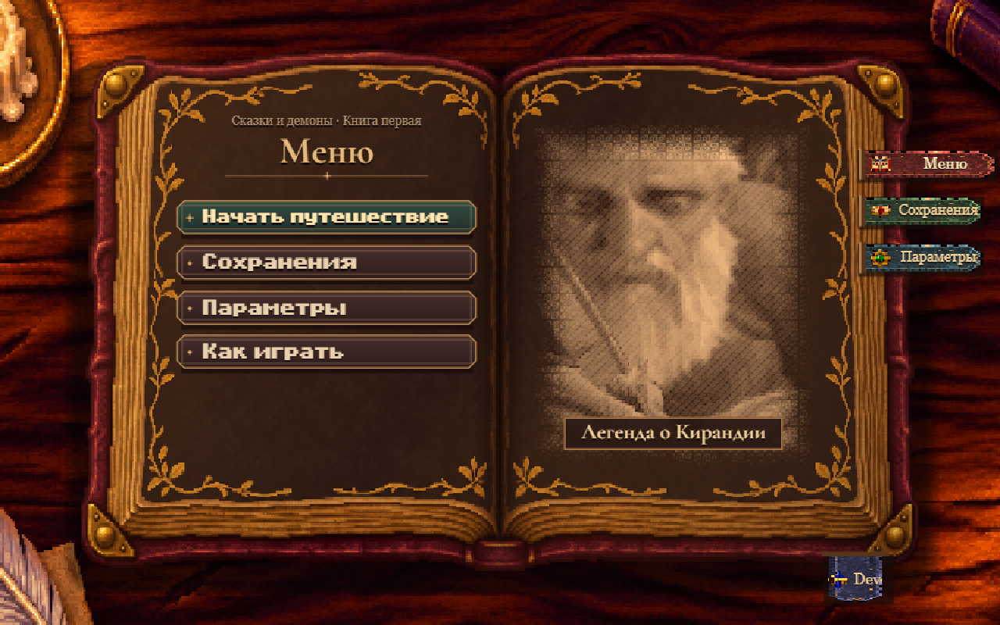
For a new clip, check the first and last frames, facing changes, contact with the ground, objects passing in front, skipping a line or scene, and leaving and re-entering the room. Compare files with the same dimensions, frame count, and visible image when measuring size.
Hand of Fate
Hand of Fate can reuse the renderer, import tools, and audio pipeline. The sequel has its own script commands, dialogue, and potion rules, so it needs a separate game layer. The differences below come from ScummVM’s HoF implementation.
| Subsystem | Reusable from WebKyr | Needed for HoF |
|---|---|---|
| Graphics and packing | Indexed bitmaps, Canvas and WebGL, KYR1, gzip, and on-demand loading. | WSA v2 decoding with coordinate offsets, room palette import from COL, Zanthia’s shapes, and rules for scaling and depth. |
| Scripts | The EMC stack interpreter as a starting point, action logging, and transition tests. | Bytecode checks, HoF’s own command table, special scripts, and game state. For example, host call 0x00 deals with the held item in LoK and changes the character’s facing in HoF. |
| Dialogue and cutscenes | Text placement, colors, audio timing, and cancelable waits. | Dialogue objects with positions and colors, TIM for beginning, loop, and end, TLK banks for CD speech, and a separate intro and finale. |
| Music | WASM emulators, AudioWorklet, volume controls, and storage for player-supplied banks. | HoF bank extraction, driver and track table checks, effect routing, and transition checks. |
| Interface and saves | Book, controls, save slots, debug menu, and the string catalog once implemented. | Zanthia’s items and inventory, potion rules, quest state, separate saves, and new dialogue. |
Testing what carries over
- Pick a specific DOS CD edition and extract CPS, MSC, COL, EMC, Zanthia’s shapes, and one WSA v2 for the first two rooms.
- Compare frames, palettes, spawn position, depth, and transitions in both directions with the original. That shows which graphics adapters the games can share.
- Implement a conversation with TIM and TLK, an item interaction, a music change, and a save. That small slice gives an estimate of the work needed on HoF commands.
So far, the HoF work covers formats and commands. The second game is not playable in WebKyr yet.
HoF room resources and scripts HoF host commands HoF dialogue WSA v1/v2
Sources and measurements
The measurements use WebKyr commit 955202ef3473. The screenshots of the home, bridge, Kyragem chamber, and book come from WebKyr. The other graphics examples use original DOS CD resources and published game packs. Masks and deltas use illustrative colors. Sizes are in bytes or decimal MB. The SHA-256 below identifies the LIFTUP.WSA file used for the measurement.
9f3c082e6ec740bd8e9e61f459c7e6be9c59250786e2d29febe30a3e7dfb4da4WebKyr repository Playable areas and verification Audio pipeline details Imported resource sizes and hashes Kyr engine family in ScummVM